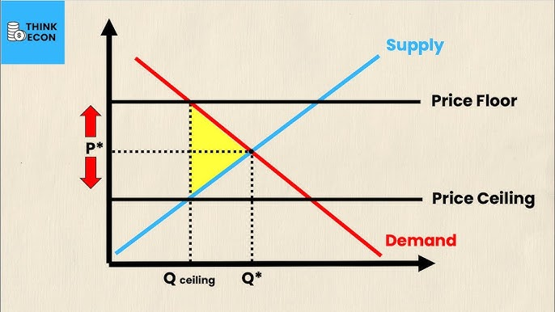
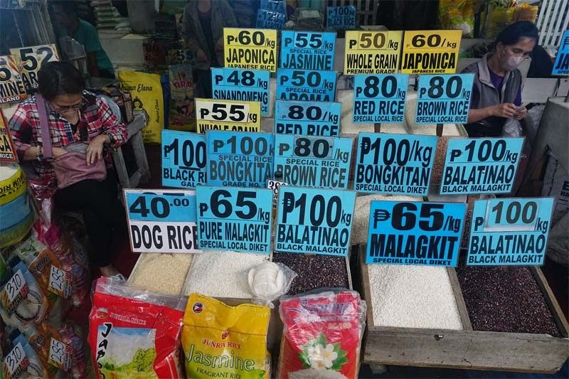

Lesson 6 - Bahaging Ginagampanan ng Pamahalaan sa Regulasyon ng mga Gawaing Pangkabuhayan
- Price Control
- - Ang price control ay ang pagtatakda ng pamahalaan ng pinakamababang at pinakamataas na presyong maaaring itakda sa mga produkto at serbisyo.
- - Layunin nitong protektahan ang mamimili at mga prodyuser laban sa labis na taas o baba ng presyo sa merkado.
- Republic Act No. 7581 (Price Act)
- - Kilala bilang Batas sa Price Control.
- - Nilalayon nitong pangalagaan ang mga mamimili laban sa labis na pagtaas ng presyo ng mga pangunahing bilihin at pigilan ang pang-aabuso sa merkado.
- - Binibigyan nito ng kapangyarihan ang pamahalaan na magpatupad ng price ceiling, price freeze, o price support kapag may krisis, kalamidad, o emerhensiya.
- National Price Coordination Council
- - Ahensya ng pamahalaan na nangunguna sa pagpapatupad at pagsubaybay ng Price Control.
- - Tungkulin nitong siguruhin ang patas na presyo at maiwasan ang pananamantala sa panahon ng kakulangan ng produkto.


- Price Ceiling (Pinakamataas na Presyo)
- - Ang pinakamataas na presyong itinakda ng pamahalaan para sa isang produkto o serbisyo.
- - Layunin: Protektahan ang mamimili laban sa sobrang taas ng presyo.
- - Kapag ang presyo ay mas mataas sa equilibrium price, maaaring magdulot ito ng kakulangan (shortage) dahil mas maraming gustong bumili kaysa magbenta.
- - Halimbawa: Presyo ng bigas, gamot, o LPG sa panahon ng kalamidad.
- Floor Price (Pinakamababang Presyo)
- - Ang pinakamababang presyong itinakda ng pamahalaan upang maprotektahan ang mga prodyuser.
- - Layunin: Tiyakin na hindi malulugi ang mga negosyante o magsasaka at matugunan ang kanilang gastusin sa produksyon.
- - Kapag ang presyo ay mas mataas sa equilibrium price, nagkakaroon ng sobra (surplus) dahil mas maraming gustong magbenta kaysa bumili.
- - Halimbawa: Presyo ng palay o gatas para sa mga lokal na magsasaka.
- Price Support
- - Isinasagawa ng pamahalaan upang bilhin ang produkto ng mga prodyuser sa makatarungang presyo.
- - Layunin: Tumulong sa mga prodyuser na makabawi sa gastos at maiwasan ang pagkalugi.
- - Halimbawa: Ang gobyerno ay bumibili ng palay sa mga magsasaka upang mapanatili ang magandang presyo sa pamilihan.
- Price Freeze
- - Ang price freeze ay ang panandaliang pagpapatigil sa pagtaas ng presyo ng mga pangunahing bilihin.
- - Layunin: Protektahan ang mga mamimili sa panahon ng kalamidad, digmaan, o emerhensiya upang hindi samantalahin ng mga negosyante ang sitwasyon.
- - Karaniwang tumatagal ng 60 araw o depende sa sitwasyon ayon sa Price Act.
- - Halimbawa: Pagpapatigil ng pagtaas ng presyo ng bigas, tubig, at gasolina pagkatapos ng bagyo o lindol.
< back to the AP home page